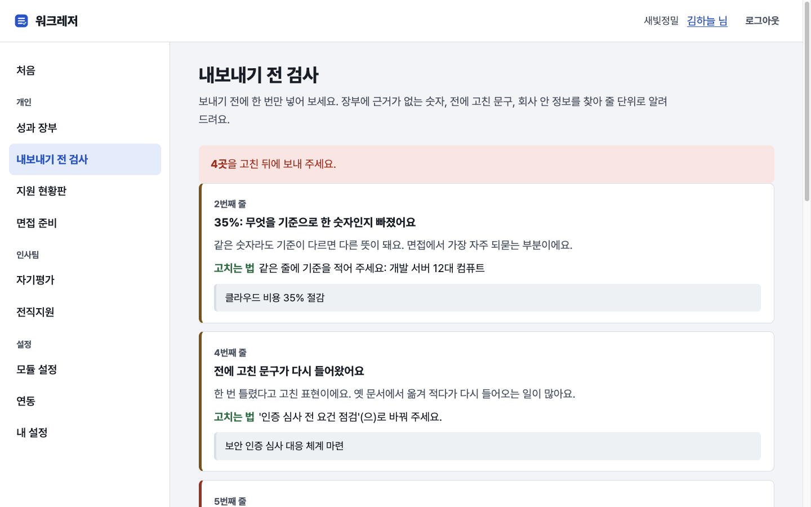
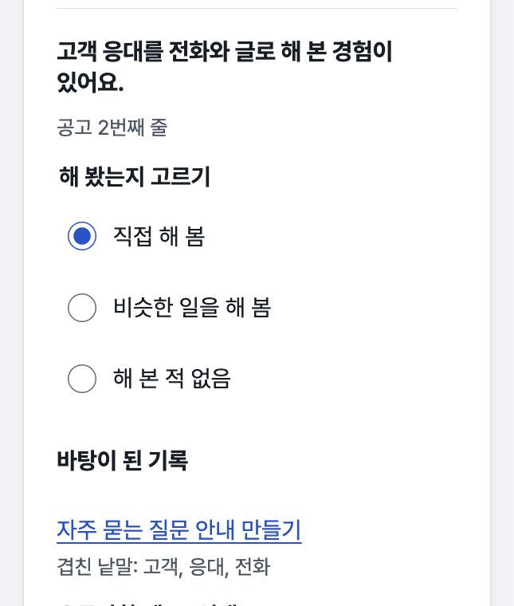
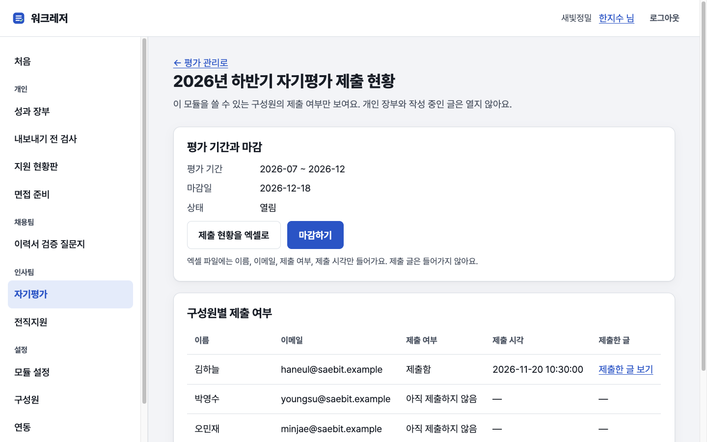
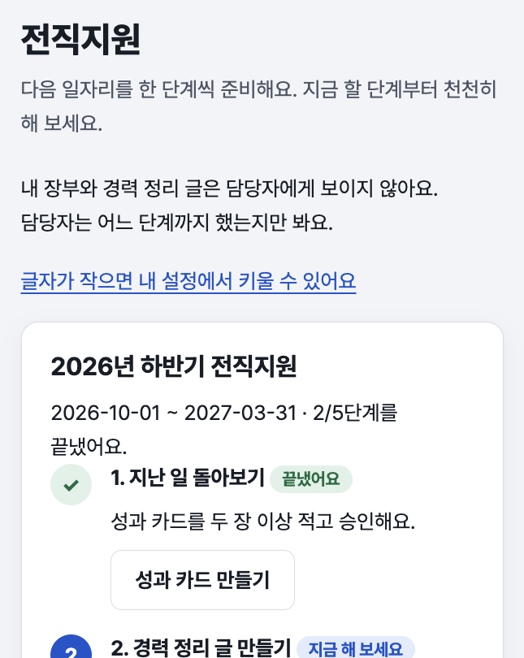

달라지는 숫자
쓸 때마다
숫자가 조금씩 달라요
배송 문의 전화가 35% 줄었어요. 그런데 이력서에는 ‘고객 문의 35% 감소’라고 쓰고, 면접에서는 ‘40% 가까이 줄였다’고 말해요.
내가 한 일 기록장 · 워크레저
한 일을 그때그때 적어 두세요. 이력서나 자기평가서를 보내기 전에, 적어 둔 것과 다른 숫자나 예전에 고친 표현이 들어가지 않았는지 찾아 드려요.
글을 대신 써 주지 않아요. 내가 적어 둔 것과 맞는지만 봐요.
이력서에 쓴 문장: 고객 문의를 35% 줄였습니다.
어떤 문의가 35%인지 빠졌어요
적어 둔 기록에는 ‘배송 문의 전화가 35% 줄었다’고 돼 있어요. 지금 문장은 모든 문의가 줄어든 것처럼 읽혀요.
이력서에 쓴 문장: 고객 응대 총괄
전에 고친 표현이 다시 들어왔어요
지난 면접 뒤에 ‘고객 문의 답변 담당’으로 고친 표현이에요. 옛 이력서를 복사하다가 다시 들어온 것 같아요.
이력서에 쓴 문장: 재구매 고객을 70% 늘렸습니다.
적어 둔 적이 없는 숫자예요
기록 어디에도 70%가 없어요. 어디서 나온 숫자인지 먼저 확인해 보세요.
이력서에 쓴 문장: 한울전자 납품 문의를 맡았습니다.
밖에 쓰지 않기로 한 이름이 들어 있어요
거래처 이름은 이력서에 쓰지 않기로 정해 뒀어요. ‘거래처’처럼 바꿔 적어 보세요.
기억만으로는 헷갈리니까
일부러 부풀리려던 게 아닌데도 생기는 일이에요.
아래는 지어낸 예시예요.
달라지는 숫자
배송 문의 전화가 35% 줄었어요. 그런데 이력서에는 ‘고객 문의 35% 감소’라고 쓰고, 면접에서는 ‘40% 가까이 줄였다’고 말해요.
다시 들어온 옛 표현
면접에서 “총괄하신 건가요?”라는 질문을 받고 이력서를 고쳤어요. 그런데 예전 파일을 복사해 쓰다 보니 다음 이력서에 ‘총괄’이 또 들어가요.
사라지는 자료
그 숫자가 어디서 나왔는지는 회사 문서와 메신저에 있어요. 퇴사한 뒤에는 열어 볼 수 없어서, 내가 쓴 숫자를 나도 설명하기 어려워요.
세 단계면 돼요
한 번 쓰고 잊는 메모가 아니에요. 다음 이력서와 면접에서 꺼내 쓰는 기록이에요.
일이 끝날 때마다 무엇을 했고 결과가 어땠는지 적어요. 숫자는 무엇이 얼마나 달라졌는지, 언제 숫자인지 같이 적어요.
이력서나 자기평가서를 붙여 넣으면 적어 둔 것과 다른 숫자, 전에 고친 표현, 밖에 쓰면 안 되는 회사 정보를 줄마다 알려 줘요.
표현을 한 번 고치면 그 표현이 남아 있는 다른 기록과 이미 보낸 글을 알려 줘요. 새 글에 다시 들어와도 알려 줘요.


실제 화면이에요. 화면 속 회사와 사람은 지어낸 것이에요. 그림을 누르면 크게 볼 수 있어요.
쓰는 사람마다 필요한 게 다르니까
한 일 기록은 누구나 기본으로 써요. 나머지는 각자 켜고 꺼요.
회사에서 같이 쓰는 기능은 관리자가 켜고, 쓸 사람을 정해요.
한 일과 결과를 한 건씩 적어 둬요. 다른 기능은 모두 이 기록을 보고 일해요.
이력서·자기소개서·프로필 글을 보내기 전에, 적어 둔 것과 다른 숫자나 전에 고친 표현, 회사 정보가 들어갔는지 찾아요.
어디에 지원했고 다음 일정이 언제인지 적어요. 채용 공고를 붙여 넣으면 공고가 바라는 것마다 내가 해 본 일을 옆에 보여 줘요.
내 기록에서 예상 질문을 뽑아 답을 연습해요. 답에 적어 둔 것과 다른 숫자가 있으면 알려 줘요. 실제 면접에서 받은 질문도 적어 둬요.
지원자 이력서에서 ‘비용 40% 절감’ 같은 문장을 찾아 “무엇과 비교한 숫자인가요?”, “직접 하신 일인가요?” 같은 질문을 미리 만들어 줘요. 지원자에게 점수를 매기지 않아요.
직원은 평소에 적어 둔 기록으로 자기평가서를 쓰고 확인한 뒤 내요. 인사 담당자는 직원이 낸 글과 누가 냈는지만 봐요.
퇴직을 앞둔 직원이 다음 일자리를 한 단계씩 준비해요. 회사가 해 준 상담과 교육도 기록으로 남겨요.




실제 화면이에요. 화면 속 회사와 사람은 지어낸 것이에요. 그림을 누르면 크게 볼 수 있어요.
하는 일에 맞게
해 온 일을 정리하고, 이력서를 보내기 전에 숫자를 확인해요. 면접에서 받을 질문도 미리 연습해요.
평소에 적어 둔 것에서 이번 기간에 한 일을 골라 자기평가서를 써요. 기억을 더듬지 않아도 돼요.
이력서에 적힌 성과에서 면접 때 확인할 질문을 미리 준비해요.
직원이 다음 일자리를 준비하는 과정을 함께 보고, 회사가 해 준 상담과 교육을 기록해요.
먼저 정해 둔 약속
내 기록의 주인은 나예요.
워크레저는 찾아 주고, 판단은 사람이 해요.
회사 담당자는 내가 낸 글만 볼 수 있어요. 내 기록은 열 수 없어요.
사람을 비교하지 않아요. 확인할 내용과 물어볼 질문만 보여 줘요.
확인하려고 넣은 글은 바깥의 AI 서비스로 나가지 않아요. 자동으로 만든 질문과 글은 사람이 고쳐서 써요.
질문을 만든 뒤 이력서는 지워요. 질문에 필요한 짧은 문장만 남겨요.
여기서 문제가 없다고 나와도, 회사가 밖으로 내보내도 된다고 한 것은 아니에요. 회사 규정은 따로 확인해요.
되는 것과 안 되는 것을 그대로
파일을 주고받는 것과 자동으로 이어지는 것은 달라요.
지금 되는 것과 아직 안 되는 것을 나눠서 알려 드려요.
PDF나 워드 파일을 올리면 내용을 가져와 기록으로 만들거나, 보내기 전에 확인해요.
리멤버·링크드인·사람인·잡코리아·원티드에 넣을 글을 내 기록으로 만들어요. 확인한 뒤 직접 복사해서 붙여 넣어요.
공고 글을 붙여 넣으면 공고가 바라는 것마다 내가 해 본 일을 옆에 보여 줘요. 공고를 자동으로 가져오지는 않아요.
일정을 파일로 내려받아 구글 캘린더나 휴대폰 달력에 넣어요.
지원 현황, 자기평가를 누가 냈는지, 재취업 지원 기록을 엑셀에서 열리는 파일로 내려받아요.
엑셀에서 정리한 명단 파일(CSV)을 올려 직원을 한꺼번에 등록해요.
“누가 자기평가를 냈어요” 같은 한 줄 알림을 업무 메신저로 보내요. 글 내용은 보내지 않아요.
회사에서 쓰는 다른 프로그램이 내가 확인을 마친 기록을 읽어 갈 수 있어요. 연결은 전산 담당자가 해요.
2026년 11월 20일에 각 회사가 공개한 안내와 약관을 읽고 적었어요.
| 어디 | 왜 아직인가 | 지금은 |
|---|---|---|
| 리멤버 프로필 자동으로 고치기 | 리멤버가 바깥 프로그램이 프로필을 고칠 길을 열어 두지 않았고, 약관에서 자동 입력을 막아요. | 리멤버에서 내려받은 이력서 파일을 올리고, 만들어 준 글을 직접 붙여 넣어요. |
| 사람인·잡코리아·원티드 공고 자동으로 가져오기 | 회사마다 신청해서 허락을 받아야 해요. | 공고 글을 복사해서 붙여 넣으면 돼요. |
| 링크드인 프로필 자동으로 고치기 | 링크드인이 허락한 채용 서비스 회사만 경력을 고칠 수 있어요. | 만들어 준 글을 직접 붙여 넣어요. |
| Jira·Confluence·Notion에서 한 일 가져오기 | 아직 만들지 않았어요. Notion은 연결 방법이 공개돼 있고, Jira·Confluence는 만든 회사에 등록을 마쳐야 해요. | 한 일을 직접 적어요. |
| 그리팅·나인하이어에서 지원자 가져오기 | 그 서비스를 쓰는 회사가 유료 요금제에서 연결을 허락해 줘야 해요. | 지원자가 낸 이력서 파일을 올리면 돼요. |
| flex·시프티에서 직원 명단 가져오기 | 그 서비스를 쓰는 회사와 계약하고 연결을 신청해야 해요. | 명단을 엑셀 파일(CSV)로 내려받아 올리면 돼요. |
| 더존(WEHAGO·Amaranth 10·옴니이솔)에서 직원 명단 가져오기 | 바깥 프로그램과 잇는 방법이 공개돼 있지 않아요. 회사마다 따로 협의해야 해요. | 명단을 엑셀 파일(CSV)로 내려받아 올리면 돼요. |
시작하기 전에
지금은 프로그램을 설치한 내 컴퓨터 안에만 저장돼요. 확인하려고 넣은 글을 인터넷이나 AI 서비스로 보내지 않아요. 업무 메신저 알림을 켜면 “누가 무엇을 했다”는 한 줄만 나가고, 회사의 다른 프로그램과 연결하면 내가 확인을 마친 기록만 읽어 갈 수 있어요.
회사 자료의 내용은 옮겨 적지 않아요. ‘10월 고객 문의 집계표’처럼 어떤 자료인지와 날짜만 적어요. 무엇을 가지고 나와도 되는지는 회사 규정을 확인해 주세요.
못 봐요. 내 기록은 나만 봐요. 인사 담당자는 내가 낸 글과 누가 냈는지만 볼 수 있어요.
아니요. 점수나 순위를 만들지 않아요. 면접관이 물어볼 질문만 미리 만들어 줘요. 질문은 사람이 고르고 고쳐서 써요.
아니요. 리멤버가 바깥 프로그램이 프로필을 고칠 길을 열어 두지 않았고, 약관에서 자동 입력을 막아요. 지금은 리멤버에서 내려받은 이력서 파일을 올리거나, 만들어 준 글을 확인한 뒤 직접 붙여 넣어요.
가격은 아직 정하지 않았어요. 먼저 써 볼 분과 회사를 찾고 있어요.